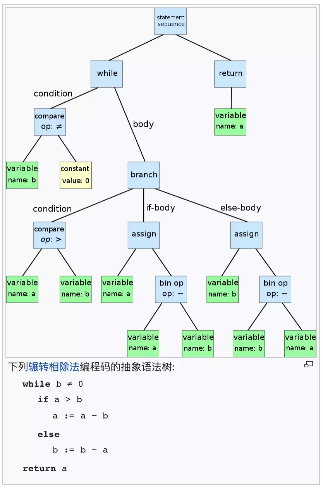
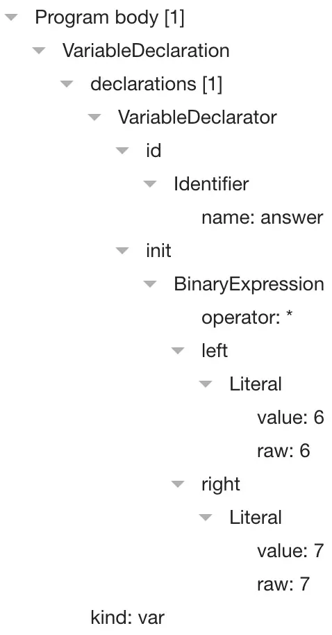
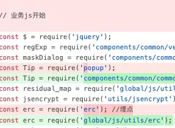
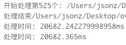

AST 简单介绍
AST(Abstract Syntax Tree)既抽象语法树，或称语法树，简单来说就是代码语法结构的一种抽象表示。比如 var answer = 6 * 7; 会被解析为这么一棵树

那么代码怎样才能解析成这一棵 AST， AST在前端领域一般又可以干嘛？
编译器
ast是由编译器解析生成的，简单的编译器可以由以下几部分组成:
- tokenizer 分词器 把代码或文本按类型分开，返回:
tokens - parser 语法剖析器 对分词后的文本按照语法分析转换成 抽象语法树 返回：ast
- transformer 语法转换器 把语法剖析后的抽象语法树转换成我们想要的: newAst
- codeGenerator 代码生成器 把AST 转换为 目标代码
我们前端构建中很常用的babel就是这种原理
babel 初始阶段并没有做任何事，基本上等于 const babel = code=> code; 先 tokenizer， parser 解析代码，再 transformer 的时候，完全不改动原来的 ast
对编译器原理有兴趣的，可以看我以前写的小demo，500行简单易懂 min-compiler，看完会有个整体概念。
而生成的AST我们可以用来做什么？
AST你都拿到了，剩下的事情就是对这棵树做你想要的操作，比如代码转换(babel)，代码压缩等。
这里我用他来处理webpack的alias泛滥问题。
webpack alias问题
webpack alias 在很多情况下可以提供便利，但是如果项目参加的人太多，又没有什么约束，大家贪图方便什么都加到alias….就会变成这样子
- 很多你不知道他到底是node_modules里面的包还是自己封装过的
- 很多写二级路径就可以获取到的，没必要多加个alias
- 现在比较推崇不是很远的路径都写成相对路径，编辑器可以直接跳过去方便（虽然这个可以通过jsconfig来解决，但是太多看着也很烦)
所以我决定把项目里的alias从23个缩减为7个。
利用 estools 解决webpack Alias
我们先来整理一下思路
- 先用解析器把代码解析成 AST
- 再找出我们需要去除的alias，把他改为其他值，生成新的AST
- 把新的AST转为代码，重新写入文件
我们这里的把alias改为其他值，指的是这种情况
1 | 目录结构: |
这里我们用 esprima 来做代码分析生成ast，用 estraverse 来转换代码，用 escodegen 生成代码。直接上代码
1 | const aliasConfig = { /* webpack alias 配置*/} |

试跑了一下，发现说虽然代码引用确实有被替换了，但是代码里面的所有空行和注释都丢了，而且一些规范格式也和原来不一样。
这显然是不行的，先不说格式的问题，一个文件连换行和注释都没有，那他就是没有灵魂的js~
看了下这是因为 esprima 在解析的时候，遇到空行和注释会直接跳过不解析生成AST，所以会导致后面生成的代码没有空行和注释。
babel解决空行和注释等问题、prettier保持代码风格一致
我们平时项目上用的最多的转换代码的工具就是babel，那么我们也可以把 esTool 那一套换成 babel生态，用babel来帮我们做这些转换。
原理和思路基本上是一样的，用 babylon 解析，babel-traverse 转换，再用babel-generator生成代码。
生成之后，先不写进去，而是用 prettier 格式化一遍再重写到本地，以保持和原来的风格一致。
1 | function translateAlias(filePath) { |

到此减少webpack-alias的功能处理完成，最后总结一下
- 用
glob读取所有要转的js文件 - 用
babylon将js文件解析成AST - 用
babel-traverse处理AST，判断如果是require('xxx')或者import xxx from 'xxx'替换掉这些路径 - 用
babel-generator将新生成的AST转化为代码 - 用
prettier格式化新生成的代码，保持与原项目风格一致 - 重新写入本地文件
告辞！
最后写的时候参考到的链接，大部分是类库的文档
迷你编译器
estools代码生成escodegen
estools代码转换estraverse
代码解析esprima
babel plugin book
babel-generator
babel-traverse
babylon
在线ast生成
在线ast生成